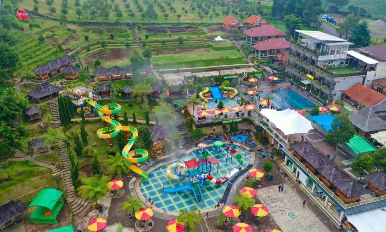

Sejarah

Sejarah Garut berawal dari pembubaran Kabupaten Limbangan pada 1811 oleh Gubernur Jenderal Belanda Daendels,
Dahulu Kabupaten Limbangan adalah Kabupaten lama yang ibu kotanya dipindahkan ke Garut kini
karena sering kali terjadi bencana alam berupa banjir yang melanda daerah ibu kota.
Selain itu, kurang berkembangnya pusat pemerintahan karena jauh dari sungai yang menjadi
sarana transportasi dan irigasi areal pesawahan dan perkebunan.
Bupati Adiwijaya (1813 - 1831) membentuk panitia survei lokasi untuk ibu kota kabupaten yang baru.
Pilihan akhirnya jatuh di tempat yang dikelilingi gunung dan memiliki mata air yang mengalir ke Cimanuk.
Orang Belanda yang ikut dalam survei tersebut tidak mampu meniru kata tersebut dan menyebutnya Gagarut.
Semula nama kabupaten tempat pemindahan ibu kota tidak akan diubah dan tetap menjadi Provinsi Limbangan.
Namun atas saran para sesepuh sebaiknya nama kabupaten tersebut diganti dengan nama baru untuk
menghindari terjadinya bencana dan musibah seperti yang sering terjadi di kabupaten Limbangan.
Pada akhirnya Orang Belanda menyebutnya sebagai Garut dan diperingati pada tanggal 16 Februari setiap tahunnya.
Geografis

Kabupaten Garut dikelilingi banyak pengunungan yang terkenal seperti Gunung Guntur, Gunung Papandayan dan Gunung Cikuray,
selain itu Kabupaten Garut juga memiliki Pantai di bagian Selatan
di daerah Pameungpeuk yang terkenal ialah Pantai Sayang Heulang dan Pantai Santolo
Kabupaten Garut yang secara geografis berdekatan dengan Kota Bandung sebagai ibu kota provinsi Jawa Barat,
merupakan daerah penyangga dan hinterland bagi pengembangan wilayah Bandung Raya.
Karena itu, Kabupaten Garut mempunyai kedudukan strategis dalam memasok kebutuhan warga Kota dan Kabupaten Bandung,
sekaligus berperan di dalam pengendalian keseimbangan lingkungan
Pariwisata
Kabupaten Garut menjadi salah satu destinasi pariwisata unggulan di Jawa Barat.
Terbentangnya Kabupaten Garut dari Garut Utara sampai dengan Garut Selatan juga memiliki berbagai objek wisata yang menarik.
Gunung Papandayan
Gunung Papandayan adalah salah satu gunung yang populer di Jawa Barat.
Gunung Papandayan menjadi destinasi wisata alam dengan nama Taman Wisata Alam Gunung Papandayan (TWA Gunung Papandayan).
Terletak di Desa Simajaya dan Desa Keramat Wangi, Kecamatan Cisurupan, Kabupaten Garut.
Salah satu yang terkenal di Gunung Papandayan ialah Hutan Mati dan Kawah Baru.
Darajat Pass

Darajat Pass adalah salah satu destinasi wisata paling populer di Garut, Jawa Barat. Terkenal dengan pemandian air panasnya yang menyegarkan,
Darajat Pass menawarkan pengalaman wisata yang menyenangkan dan menenangkan di tengah udara pegunungan yang sejuk.
Terdapat Kolam Air Panas, Wahana Permainan Air yang besar dan Area Outbonding Camping.
Selain itu juga berbagai pilihan penginapan mulai dari vila, bungalow, hingga hotel dengan fasilitas lengkap.
Penginapan-penginapan ini biasanya menawarkan pemandangan langsung ke pegunungan dan perkebunan, menambah kenyamanan selama menginap.
Pantai Sayang Heulang

Pantai Sayang Heulang terletak di Desa Mancagahar, Kecamatan Pameungpeuk, tidak hanya terkenal dengan Jeruk Garut
tetapi salah satu pantai yang populer terdapat di Kabupaten Garut. Dengan Menikmati panorama pantai dan biota laut,
merupakan aktivitas wisata yang dapat dilakukan.
Di pantai ini terdapat arena khusus untuk bermain voli dengan demikian para wisatwan dapat bermain voli di area tersebut.
Terdapat banyak rumah makan dan berbagai penginapan dengan berbagai macam fasilitas.
Pantai Sayang Heulang ini berdekatan dengan Pantai Santolo Pameungpeuk Garut.